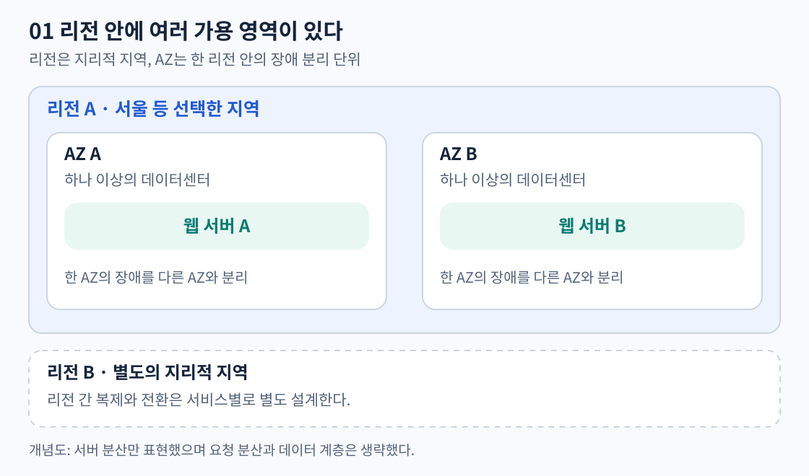
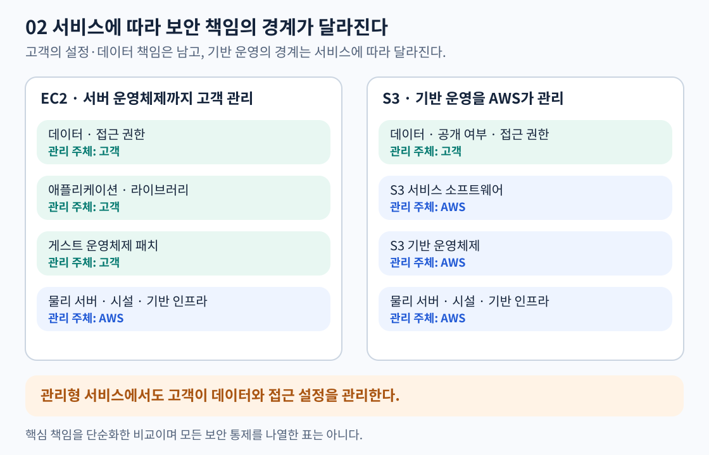
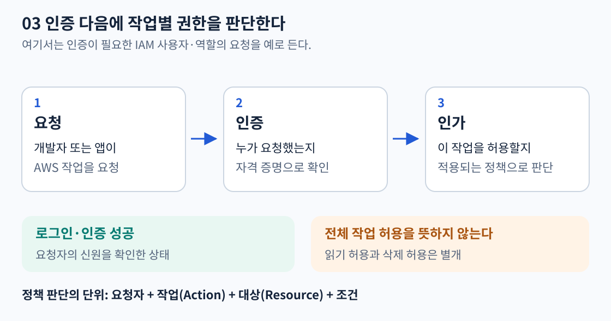
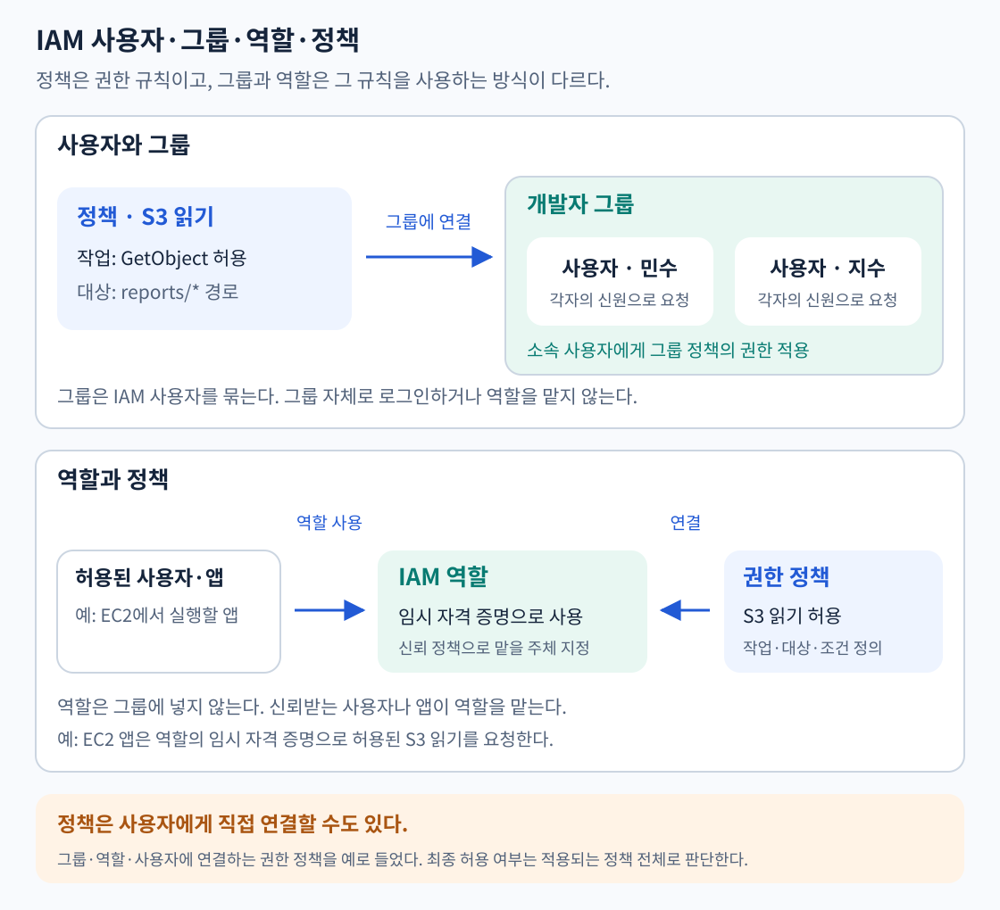
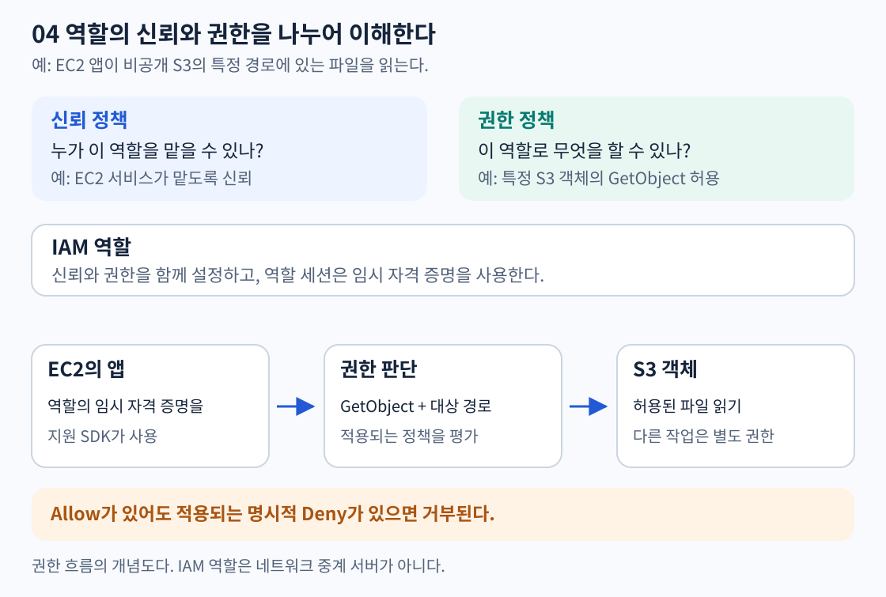
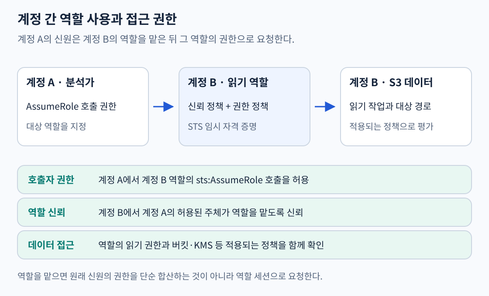

| 시간 | 할 일 |
|---|---|
| 0~20분 | 1절: 리전과 가용 영역 읽기 |
| 20~35분 | 2절: 공동 책임 모델 읽기 |
| 35~60분 | 3~5절: IAM의 신원·역할·정책 읽기 |
| 60~75분 | 6절: 비교표를 보며 구조를 직접 그리기 |
| 75~90분 | 7절: 자료를 덮고 내 말로 정리하기 |
리전은 AWS 인프라가 있는 별도의 지리적 지역이다. 서울 리전처럼 서비스를 배치할 지역을 선택한다고 이해하면 된다. 선택할 때는 사용자와의 거리, 데이터 보관 요구, 필요한 서비스 제공 여부와 비용을 고려한다.
많은 리소스는 생성한 리전에 속한다. 다른 리전을 보고 있으면 해당 리소스가 보이지 않을 수 있다. 리전 간 데이터 복제도 서비스를 만들었다는 이유만으로 자동 설정되지 않는다.
AZ는 한 리전 안에서 장애가 분리되도록 설계된 위치다. 하나의 AZ는 하나 이상의 데이터센터로 구성된다. 같은 리전의 AZ들은 지연이 낮은 네트워크로 연결된다.
한 AZ에 서버를 여러 대 놓으면 서버 한 대의 장애에 대비할 수 있지만, 그 AZ 전체의 장애에는 함께 영향을 받을 수 있다. 여러 AZ에 분산하는 이유가 여기에 있다.

리전 안에서 AZ를 나눠 배치한다. 다른 리전으로의 복제는 별도 설계다.
다중 AZ에 서버만 만들었다고 모든 장애 대응이 완성되지는 않는다. 요청 분산과 데이터 계층도 함께 설계해야 한다. 구체적인 구성은 6~8일 차에 다룬다. 다중 리전은 더 넓은 장애 범위에 대비할 수 있지만 복제·전환 설계가 추가된다.
출처: AWS 리전과 가용 영역
AWS는 클라우드 기반 시설의 보안을, 고객은 사용 방식과 구성에 따른 보안을 책임진다. 고객이 관리하는 범위는 서비스에 따라 달라진다.

| 대상 | 주된 책임 | 구체적인 예 |
|---|---|---|
| 데이터센터·물리 서버 등 기반 시설 | AWS | 시설 출입 통제, 하드웨어 관리 |
| EC2의 게스트 운영체제와 앱 | 고객 | OS 보안 패치, 앱 취약점 수정 |
| 고객 데이터와 접근 설정 | 고객 | 데이터 분류, 공개 여부, 권한 설정 |
| S3의 기반 인프라와 운영체제 | AWS | 고객이 직접 S3 서버의 OS를 패치하지 않음 |
EC2는 고객이 OS와 앱을 관리할 일이 많다. S3 같은 추상화된 서비스는 AWS가 더 많은 기반 영역을 관리하지만, 고객은 데이터와 접근 권한을 여전히 관리한다.
예를 들어 S3 버킷을 잘못 공개했다면 물리 서버 보안과 별개로 고객의 접근 설정을 살펴야 한다. 관리형 서비스를 쓴다는 이유로 데이터 보호 책임까지 모두 AWS로 넘어가지는 않는다.
출처: AWS 공동 책임 모델
IAM은 AWS 리소스에 대한 접근을 관리한다. 인증은 요청자를 확인하고, 인가는 작업 권한을 판단한다.
| 구분 | 의미 | 예시 |
|---|---|---|
| 인증(Authentication) | 요청자가 누구인지 확인 | 개발자 또는 역할 세션의 신원 확인 |
| 인가(Authorization) | 요청한 행동을 허용할지 판단 | 특정 S3 파일 읽기 허용, 삭제는 불허 |
로그인에 성공해도 모든 서비스의 모든 기능을 사용할 수 있는 것은 아니다. 같은 신원으로 요청해도 작업과 대상에 따라 권한 판단이 달라진다.

AWS 계정을 만들 때 생기는 루트 사용자는 강력한 접근 권한을 가진다. 일상적인 관리나 앱 실행용으로 사용하지 않고, 루트가 필요한 작업에 한정한다.
출처: IAM 소개
| 이름 | 역할 | 혼동하지 말 것 |
|---|---|---|
| IAM 사용자(User) | 계정 안에 만들어 관리하는 신원 | AWS 계정 자체와 다름 |
| IAM 사용자 그룹(Group) | IAM 사용자들을 묶어 권한 관리 | 그룹 자체로 로그인하지 않음 |
| IAM 역할(Role) | 허용된 주체가 맡아서 사용하는 신원 | 특정 사람만의 영구 계정이 아님 |
| 정책(Policy) | 허용·거부할 행동과 대상 등을 정의 | 정책 자체가 로그인 신원은 아님 |

개발자 그룹에 S3 읽기 정책을 연결하면 민수와 지수에게 같은 읽기 권한을 적용할 수 있다. 두 사용자는 각자의 신원으로 요청하며, 그룹 이름으로 로그인하지 않는다.
EC2 앱에는 S3 읽기 권한이 있는 역할을 연결한다. 앱은 역할의 임시 자격 증명을 사용한다. 역할은 개발자 그룹에 넣는 구성원이 아니다.
정책은 사용자·그룹·역할에 연결하는 권한 규칙이다. 사용자에게 직접 연결할 수도 있다.
IAM 사용자는 사람이나 앱을 나타내는 신원이다. 사람의 AWS 접근에도 연동 로그인과 임시 자격 증명 사용을 권장한다.
출처: IAM 신원, IAM 사용자 그룹, 역할, 정책
역할은 신뢰받는 주체가 맡아서 사용할 수 있다. 역할에는 일반적인 장기 비밀번호나 액세스 키가 붙지 않으며, 역할을 맡으면 세션용 임시 자격 증명을 사용한다.
EC2 앱은 역할의 임시 자격 증명으로 비공개 S3 파일 읽기를 요청한다.

그림은 권한 판단 흐름이다. IAM 역할이 요청을 전달하는 네트워크 서버라는 뜻은 아니다.
EC2가 역할을 맡으려면 신뢰 정책이, 그 역할로 S3를 읽으려면 읽기 권한이 필요하다. EC2에는 인스턴스 프로파일을 사용해 역할을 연결한다.
출처: IAM 역할, IAM 정책과 권한
AWS STS는 역할 세션에 사용할 임시 자격 증명을 발급한다. 액세스 키 ID·비밀 액세스 키·세션 토큰을 함께 사용하며 만료 시간이 있다. 지원 SDK는 자격 증명 제공자를 통해 갱신하지만, 만료된 값을 코드에 고정해 두면 이후 호출에 실패한다.
운영 계정의 데이터를 개발 계정 분석가에게 보여줘야 한다면 운영 계정에 읽기 역할을 만들고 개발 계정의 허용된 신원이 그 역할을 맡도록 구성할 수 있다. 사용자마다 운영 계정에 장기 키를 새로 만들 필요가 없다.

교차 계정 AssumeRole에는 호출자의 역할 호출 권한과 대상 역할의 신뢰가 필요하다. 역할을 맡은 뒤에는 대상 역할 세션으로 요청한다. 원래 사용자의 관리자 권한이 대상 역할의 읽기 권한에 그대로 더해지는 방식이 아니다. S3·KMS·조직 정책 등도 최종 접근 판단에 영향을 줄 수 있다.
출처: STS 임시 자격 증명, 교차 계정 역할 사용
역할 기반 접근(RBAC)은 직무별 역할에 권한을 부여한다. 예를 들어 분석가는 조회 역할, 운영자는 배포 역할을 사용한다. 속성 기반 접근(ABAC)은 신원과 리소스의 태그 같은 속성을 조건으로 사용한다. project=alpha인 역할이 같은 프로젝트 태그의 리소스만 다루게 하는 구성이 예다.
태그만 붙인다고 권한이 자동으로 생기지 않는다. 태그 조건을 평가하는 정책과 해당 서비스의 지원 여부를 확인해야 하며, 태그를 임의로 바꾸지 못하도록 태그 수정 권한도 통제한다.
출처: ABAC와 RBAC
사람의 AWS 접근에는 연동 로그인과 임시 자격 증명을 사용하고, 조직의 중앙 접근 관리에는 IAM Identity Center를 고려한다. EC2·Lambda에서 실행하는 앱은 IAM 역할을 통한 임시 자격 증명을 사용한다. 지원되는 SDK는 이 자격 증명을 찾아 사용할 수 있어 코드에 장기 키를 넣지 않아도 된다.
최소 권한은 필요한 행동과 대상만 허용하는 원칙이다. 파일 읽기만 필요한 앱에 버킷 삭제나 전체 관리자 권한을 줄 이유가 없다. 루트와 IAM 사용자를 사용하는 경우에는 MFA로 보호한다.
출처: IAM 보안 권장 사항
많은 IAM 정책은 JSON으로 표현하며 다음 항목으로 권한을 정의한다.
| 항목 | 읽는 방법 | 설명용 예 |
|---|---|---|
| Effect | 허용인가, 명시적 거부인가 | Allow |
| Action | 어떤 작업인가 | s3:GetObject |
| Resource | 어느 리소스인가 | arn:aws:s3:::example-study-bucket/reports/* |
| Condition | 어떤 추가 조건인가 | 특정 조건에서만 요청 허용 |
위 예에서 Allow·GetObject·해당 객체 경로를 조합하면 “그 경로의 객체 읽기를 허용한다”는 뜻이다. 버킷 목록 조회는 별도 작업인 ListBucket이므로 객체 읽기 허용과 동일하지 않다.
정책은 역할 같은 신원에 붙일 수도 있고, S3 버킷 같은 리소스에 붙일 수도 있다. 버킷 정책처럼 리소스에 붙는 정책에서는 허용할 주체(Principal)를 지정할 수 있다.
출처: IAM 정책과 권한
일반적인 IAM 사용자·역할 요청에서는 권한이 없으면 기본적으로 거부된다. 적용되는 정책의 명시적 Deny는 Allow보다 우선한다.
역할에 Allow가 있어도 적용되는 버킷 정책이나 조직 통제 등 다른 정책이 요청을 막을 수 있다. 반대로 모든 요청에서 신원 정책과 리소스 정책에 각각 Allow가 있어야 한다는 규칙도 아니다. 같은 계정인지, 교차 계정인지, 어떤 정책이 적용되는지에 따라 평가가 달라진다.
접근 권한은 요청자·작업·대상·조건과 적용되는 정책을 기준으로 확인한다.
출처: 정책 평가 논리
권한 경계(Permissions boundary)는 사용자나 역할의 신원 정책이 부여할 수 있는 최대 범위를 제한한다. 경계 자체가 권한을 부여하지 않는다. 예를 들어 개발자가 역할을 만들 수 있어도 지정한 경계를 넘는 관리자 권한을 그 역할에 부여하지 못하도록 구성한다.
Organizations의 SCP는 여러 계정에 적용하는 통제다. IAM 정책에 Allow를 추가한다고 적용되는 SCP의 거부를 넘을 수는 없다. 리소스 정책과 역할 세션에는 세부 평가 차이가 있으므로 모든 정책을 무조건 같은 방식으로 교집합 처리한다고 외우지 않는다. 조직별 구성은 12일 차에서 다룬다.
출처: IAM 권한 경계
IAM 역할 설정은 삭제하기 전까지 계정에 남는다. 일시적인 것은 역할 자체가 아니라 역할을 맡아 만든 세션과 그 임시 자격 증명이다. 세션은 한 번의 역할 사용 기간이며, 같은 역할로 여러 세션을 만들 수 있다. 호출자(caller)는 API 요청을 보내는 주체이고 Principal은 정책에서 신원을 나타내는 항목이다. 권한(permission)은 특정 대상에 특정 행동을 할 수 있는 허용이며 역할의 별명이나 로그인 암호가 아니다.
AssumeRole은 프로그램이 STS에 “지정 역할의 세션을 만들어 달라”고 보내는 API다. API는 서비스가 정한 형식으로 호출하는 요청이다. 역할은 요청을 전달하는 서버가 아니라 권한을 가진 신원이며, 역할을 맡으면 새로운 세션 자격 증명으로 다음 서비스에 직접 요청한다.
예를 들어 계정 A의 분석가가 계정 B의 ReportReader를 사용한다. A의 분석가 정책은 sts:AssumeRole을 B 역할 ARN에 허용하고, B 역할의 신뢰 정책은 A의 분석가를 신뢰한다. 이 진입 권한을 통과하면 STS는 액세스 키 ID·비밀 키·세션 토큰·만료 시각을 돌려준다. 세 값 중 토큰을 빼거나 만료된 값으로 요청하면 실패한다. 이후 S3 요청은 B의 ReportReader 세션으로 평가하며 A의 관리자 권한을 합산하지 않는다.
ReportReader가 reports/*의 GetObject만 허용한다면 보고서 읽기는 가능하지만 DeleteObject나 다른 접두사 읽기는 허용되지 않는다. 신뢰 정책에 S3 읽기를 넣는 것으로 대신할 수 없다. 반대로 S3 읽기 정책이 있어도 AssumeRole 호출자 허용이나 신뢰가 없으면 세션 발급부터 실패한다. 적용되는 명시적 Deny와 KMS·버킷 정책 등도 별도 확인한다.
EC2 앱은 인스턴스 프로파일로 역할을 연결하고 SDK의 자격 증명 제공자가 IMDS에서 임시 값을 찾아 갱신하게 한다. 프로파일은 EC2에 역할을 전달하는 컨테이너이며 역할 자체와 다르다. 코드·AMI에 장기 키를 넣지 않는다. 환경 변수에 오래된 키가 우선 선택되면 새 역할을 연결해도 앱은 옛 키로 호출할 수 있다. 이미 유출된 사용자 키는 역할 전환과 별도로 비활성화·삭제해야 한다.

권한 경계는 업무 Allow의 상한이다. 경계가 ListBucket만 허용하면 역할의 GetObject Allow와 일치하지 않아 읽기가 실패한다. 개발자가 역할을 만들 때 지정 경계를 강제하고 경계 제거·교체·정책 편집도 막아야 한다. ABAC는 주체 project 태그 = 리소스 project 태그 같은 정책 조건으로 반복 정책을 줄이지만 태그 수정 권한을 그대로 주면 다른 프로젝트로 가장할 수 있다. SCP의 명시적 Deny는 관리자 Allow도 막으며 예외는 적용되는 Deny의 범위에서 좁혀야 한다.
정책 JSON 5개, 요청별 성공·실패, 세션 수명, ABAC·경계의 예외, 직원 연동과 External ID는 IAM 요청과 역할 세션 심화에서 순서대로 이어진다. 조직 조건은 12일 차와 연결된다.
출처: AssumeRole API, EC2 역할, 권한 경계.
| 비교 | 구분할 기준 |
|---|---|
| 리전 / AZ | 지리적 지역 / 리전 안의 장애 분리 위치 |
| 다중 AZ / 다중 리전 | 한 리전 안의 분산 / 여러 리전에 걸친 분산 |
| 인증 / 인가 | 누구인가 / 요청한 행동이 허용되는가 |
| 사용자 / 역할 | 관리하는 신원 / 신뢰받는 주체가 맡는 신원 |
| 역할 / 정책 | 요청에 사용하는 신원 / 허용·거부 규칙 |
| 신뢰 정책 / 권한 정책 | 역할을 맡을 주체 / 역할로 수행할 행동 |
| 최소 권한 / 관리자 권한 | 필요한 작업·대상에 한정 / 넓은 관리 권한 |
그림 1은 리전 안에 AZ A와 AZ B를 그리고 서버를 하나씩 놓는다. 그림 옆에 “이 배치로 분리한 장애 범위”와 “아직 설계하지 않은 요청 분산·데이터 계층”을 표시한다.
그림 2는 EC2 앱 → 역할의 임시 자격 증명 → S3 객체 읽기 흐름을 그린다. 역할 옆에 “EC2가 맡도록 신뢰”와 “특정 객체 읽기 허용”을 각각 표시한다.
자료를 덮고 배운 내용을 직접 설명해본다.
리전과 AZ를 나누어 생각하면 …
서버 두 대를 같은 AZ에 둘 때와 다른 AZ에 둘 때 …
EC2와 S3를 사용할 때 내가 관리할 보안 영역은 …
인증에 성공한 뒤에도 권한을 확인하는 이유는 …
EC2 앱에 역할을 주면 …
신뢰 정책과 권한 정책은 각각 …
읽기 전용 앱에 최소 권한을 적용하면 …
아직 헷갈리는 용어는 …
작성한 내용을 채팅에 보내면 틀리거나 빠진 내용을 확인한다.
공식 자료 확인일: 2026-11-02